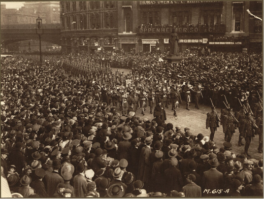
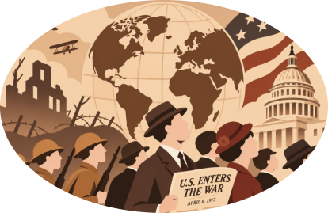
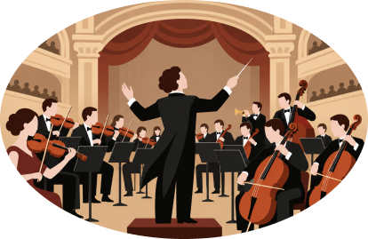

How did World War I change how much German music the Philharmonic played, and what does it show about music as well as national identity?
Before WW1, German music was celebrated as an important part of American classical music. After the US entered the war in 1917, German composers became associated with enemy nations, and their music appeared less frequently. The return of German music after the war suggests that political attitudes, rather than permanent change in musical preferences, contributed to that decline.
The timeline shows that the New York Philharmonic did not cut German music when the war started in 1914. Wagner, Strauss, and Beethoven stayed on the program while the US was neutral, during which Wagner was played the most in 1915-1916. But then when the US entered the war in 1917, there was a major decline in the number of works being put out by Wagner and also Strauss disappearing for almost 3 years. Towards the end of the war, throughout 1920-1921, all three of them were back, and Wagner was played way more than before the war. Since the music spiked so quickly, it was most likely due to political reasons and not about the music itself. We can also see that not every German composer was treated the same as well. Beethoven dropped much less compared to Wagner and Strauss. So, based on the timeline, it suggests that during the war, music became a part of national identity, in which the orchestra’s program changed based on who the US was fighting.

Timeline


European classical music, German music are very influential in American musical culture.
The New York Philharmonic was founded and is the oldest symphony orchestra in the US on April 2, 1842. Its first concert on December 7 opened with Beethoven’s Symphony No. 5, showing German music’s importance from the beginning.
German and Austrian classical music continues to hold prestige in American musical institutions.
Josef Stransky (Bohemian, now Czech Republic) succeeds Gustav Mahler (Austro-Bohemian) as director of the New York Philharmonic after his untimely death. He remained in the position until 1923 after World War I had concluded.
WWI Begins. Germany invades Belgium, and Britain and France enter the war. The US remains neutral. Tensions surrounding German identity begin to grow.
Wagner and Richard Strauss (German composers) are the most popular. 60 works from Wagner and 21 from Strauss. Beethoven is also German with 32 works.
Germany sinks the Lusitania in May, killing American passengers and intensifying anti-German sentiment. However, the U.S. remains neutral. In schools, schools stopped offering German classes.
Wagner hit his peak with 129 works performed. Strauss with 16. Hostility toward Germans did not immediately eliminate German music from concert halls.
American attitudes toward Germany become more hostile as war continues.
Wagner drops to 87 works and Strauss drops to 17. Slight decline in the works.
The US enters WWI, April 6, triggering stronger anti-German sentiment and pressure to demonstrate more American patriotism.
Music Director Josef Stransky continues to perform at Carnegie Hall amidst the war. The percentage of Germanic works in New York dropped from 60% in 1916–17 to 47% in 1917–18.
World War One ended.
Germanic repertoire reached its lowest point at 32% in 1918–19, then recovered fairly quickly. No Richard Strauss works are programmed that season. Beethoven drops to 14 works.
Treaty of Versailles signed. Formally ended the state of war between Germany and most Allied Powers after World War I.
Germanic repertoire rebounds to 51%. The orchestra honors the sudden passing of President Theodore Roosevelt with American composer Edward MacDowell’s “Dirge.”
German cultural traditions become less politically controversial in the United States.
Germanic repertoire recovers to 67%. Strauss and Wagner return to the repertoire; Beethoven comes back strongly.
The United States officially ended the state of war with Germany on July 2, 1921, when President Warren G. Harding signed the Knox–Porter Resolution.
Germanic repertoire maintains a similar threshold of 65%.